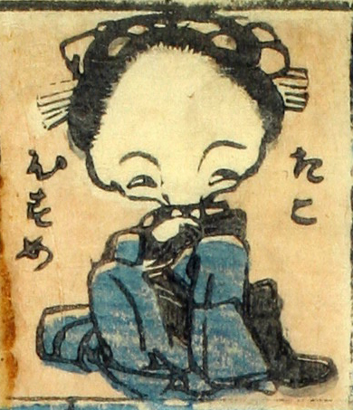

蛸；タコ，娘；ムスメ，女；オンナ

蛸娘。額が広い。着物をまとって、右手を襟元にやり、しなを作って座っている。
著作者：芳盛／出典：親書誌：U426_nichibunken_0073：しん板化物尽し；シンパンバケモノヅクシ／日付：2006／資源識別子：U426_nichibunken_0073_0025_0000
Copyright (c)2010- International Research Center for Japanese Studies, Kyoto, Japan. All rights reserved.